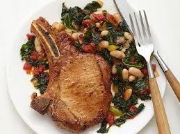

Cajun Porkchops

Overview
A recipe I created as a broke college student that has since become a signature dish for myself in a way. Cheap,
easy to make, and easy to clean up, these cajun porkchops epitomize the college eating mentality. With a little
refinement over the years, the flavors have become more robust without sacrificing the original principles of
the dish.
Ingredients
- 4 - 6 bone-in porkchops
- 1 medium sweet onion, halved and sliced
- 4 - 5 cloves of garlic, minced
- Cajun Seasoning
- 1 lemon, sliced
- 1 bottle BBQ sauce
- 1 tsp olive oil
- 1 tsp Kosher Salt
- 1 tsp black pepper
Steps
- Preheat the oven to 350F.
- Heat a pan over medium heat and add the olive oil and garlic. After the garlic becomes fragrant and slightly
toasted, add the onion, salt and pepper. Stir until slightly translucent.
- Remove the garlic and onion from the pan. Sear each side of the porkchops while seasoning each side
generously.
- Layer the onion and garlic mixture on the bottom of a baking dish (at least 1 inch deep).
- Place the porkchops on top of this mixture, adding lemon slices to the tops of each porkchop.
- Cover the porkchops with the BBQ sauce, and then lightly cover the baking dish with aluminum foil.
- Cook the porkchops for 25 - 35 minutes, or until the internal temperature reaches 145F. Serve with your
choice of sides.